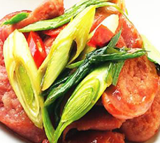

首頁
|
檢視購物清單
|
臉書粉絲團
蒜苗炒香腸

家裡都會有的兩樣食材，媽媽很容易就會擺在一起炒。不過也想要炒得好吃的話，要怎麼做呢？
【材料】
厝味香腸4條、蒜苗2根、辣椒1條、蔥3根
【調味料】
醬油1大匙、米酒1大匙
【做法】
1.蒜苗斜刀厚片，蒜苗綠和蒜苗白分開、辣椒斜刀切片、蔥切小段。
2.取炒鍋加水煮滾後，下香腸煮至水分收乾，並煎至外表上色後，取出斜切0.4公分厚片備用。
3.取炒鍋入油，下蒜苗綠、蔥段炒香，再下香腸炒勻，加入水燜煮至收汁，再下辣椒、蒜苗白炒勻。
4.起鍋前，加入調味料炒勻即可起鍋。